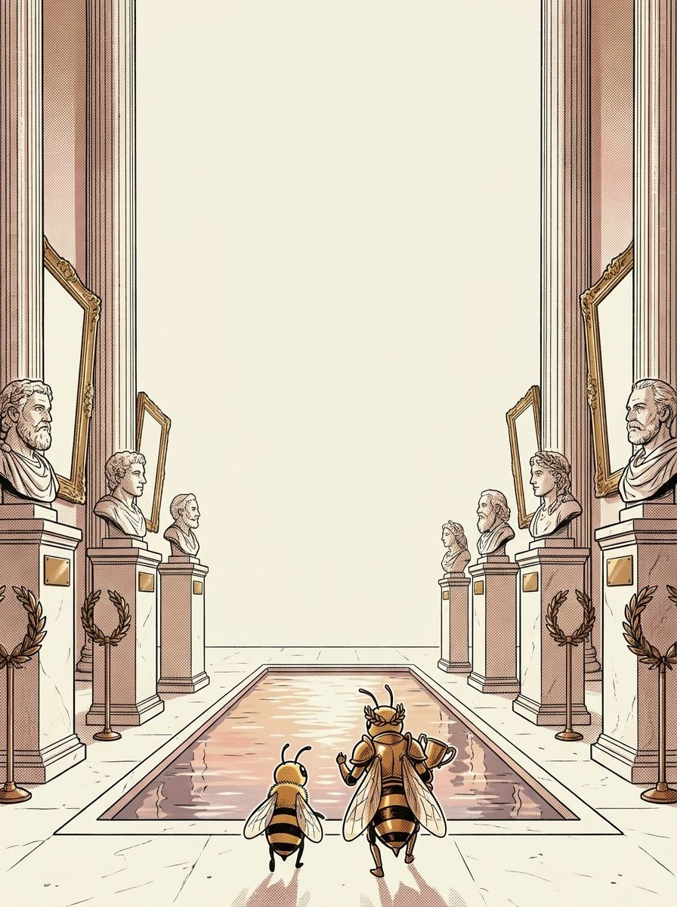

I'm Gold Legend. Every word here was a person first. Nothing in this book is filler — if a page is here, a real speller lost a real word without it.
1
Read the story
Each chapter opens as a storyboard. Vex sets the trap; the crew talks you out of it.
2
Steal the pro move
The dark box is how a champion thinks on stage. It works on brand-new words too.
3
Spell out loud, then write
Say it, spell it aloud, write it. The order matters — it is how the stage will ask for it.
4
Pass the checkpoint
A short quiz on the chapter, gated at 90%. Circle your answers, then verify at the back.
5
Play the game, then revise
Every chapter ends with a fun game, answer key at the back. Revise all words at the end and circle the ones you can spell and define.
Bizzing Bee · Named After Someone1
Named After SomeoneThe cast
Bizzy — and this book's guide, Gold Legend
The crew of Vol. 17
The ensemble for this volume. They host the drills and checkpoints; the work is still yours.
Bizzy — The little bee who spells the world back together, one petal at a time. · — The legend the marquee was built for.
Gold Legend
OVR 85
Grandmaster of the Spotlight
The legend the marquee was built for.
Volt
OVR 67
Champion of the Lab
A jolt of pure spelling energy.
Phoenix Flame
OVR 76
Champion of the Lab
Rises brighter from every mistake.
Atom
OVR 62
Speller of the Lab
Small but the building block of everything.
And the other one
Vex, the word-moth. Every trap in this book is one it has watched a speller fall into on a real stage.
Bizzing Bee · Named After Someone2

WELCOME TO
The Roman Forum
A picnic in the Meadow with every simile we own. Bring an appetite.
Bizzing Bee · Named After Someone3
Chapter 1 · Gods and heroes — the Greek names inside Engl…The idea · ★★★
The big idea
An eponym is a word made from somebody's name, and the oldest ones in English are not people at all: they are Greek gods, heroes and monsters. That matters at the microphone, because the spelling follows the NAME, not the sound. Atlas held up the sky, so atlas keeps his single t.
The pro move
HYGIENE
Say it. HY-jeen
Ask. is a name hiding in here?
The name. Hygieia, the Greek goddess of health
Read the name. H · Y · G · I · E · I · A gives you hygie-
Finish. hygie + ne
Why a name is a gift
Most words make you choose between spellings. A name does not: it was fixed centuries before the word existed, and nobody is allowed to respell it.
The Greek fingerprints
Greek names bring Greek letters with them.
Check yourself
Book closed: atlas · echo · panic, out loud, full words. At this level, almost right is still an elimination.
Bizzing Bee · Named After Someone4
Chapter 1 · Gods and heroes — the Greek names inside Engl…Practice · ★★★
Say it. Spell it out loud. Write it.
atlas
/ A-tluhs / · /ˈætləs/
(Greek mythology) a Titan who was forced by Zeus to bear the sky on his shoulders
named after Atlas, the Titan condemned to hold up the sky; his picture was printed at the front of early map collections.
Like the mythological ▁▁▁, the exhausted firefighter felt as though he were carrying the weight of the world on his shoulders.
echo
/ EH-koh / · /ˈɛkoʊ/
the repetition of a sound resulting from reflection of the sound waves
named after Echo, the mountain nymph who was left able to repeat only the last words anyone said to her.
She could hear ▁▁▁ of her own footsteps.
panic
/ PA-nihk / · /ˈpænɪk/
an overwhelming feeling of fear and anxiety
named after Pan, the goat-legged Greek god of wild places, whose shout could stampede a whole flock.
▁▁▁ in the stock market.
siren
/ SEYE-ruhn / · /ˈsaɪrən/
a sea nymph (part woman and part bird) supposed to lure sailors to destruction on the rocks where the nymphs lived
named after the Sirens, sea creatures whose singing lured sailors onto the rocks.
Odysseus ordered his crew to plug their ears so they would not hear the ▁▁▁'s fatal song.
tantalize
/ t-A-n-t-uh-l-ay-z / · /tˈæntəleɪz/
to tease someone by keeping something they want just out of reach
named after Tantalus, punished with fruit and water that drew back every time he reached for them.
The smell of fresh cookies began to ▁▁▁ the students waiting outside the locked kitchen.
hygiene
/ h-AY-j-ee-n / · /hˈeɪdʒin/
the science that deals with preservation of health
named after Hygieia, the Greek goddess of health and cleanliness, daughter of the healer Asclepius.
The school nurse visited every classroom to explain why proper ▁▁▁, including washing hands thoroughly before eating and after using the restroom, was essential for preventing the spread of germs and illness.
Bizzing Bee · Named After Someone5
Chapter 1 · Gods and heroes — the Greek names inside Engl…Practice · ★★★
Say it. Spell it out loud. Write it.
narcissism
/ n-AH-r-s-ih-s-ih-z-uh-m / · /nˈɑrsɪsɪzəm/
is excessive self-love vanity
named after Narcissus, the youth who fell in love with his own reflection in a pool and could not leave it.
His constant bragging showed a ▁▁▁ that made teammates roll their eyes.
Herculean
/ her-KYOO-lee-uhn / · /hərˈkjuliən/
displaying superhuman strength or power
named after Heracles (Hercules to the Romans), who was set twelve labours no ordinary man could finish.
Moving all those waterlogged sandbags before the flood arrived was a ▁▁▁ task that left the volunteers exhausted but proud.
odyssey
/ AH-duh-see / · /ˈɑdəsi/
a long wandering and eventful journey
named after Odysseus, whose journey home from Troy took ten years and gave Homer his Odyssey.
Her solo backpacking trip across three continents became a true ▁▁▁ of self-discovery.
hermetic
/ hur-MET-ik / · /hʌrˈmɛtɪk/
completely sealed; completely airtight
named after Hermes Trismegistus, the legendary alchemist said to have sealed a jar so tightly nothing could get in.
The ancient tomb had a ▁▁▁ seal that kept it perfectly preserved for thousands of years.
titanic
/ teye-TA-nihk / · /taɪˈtænɪk/
of great force or power
named after the Titans, the enormous elder gods the Olympians had to overthrow.
The ▁▁▁ storm uprooted century-old trees and tore rooftops from houses across the county.
protean
/ proh-TEE-uhn / · /proʊˈtiən/
taking on different forms
named after Proteus, the sea god who changed shape into anything at all rather than answer a question.
Eyes...of that baffling ▁▁▁ grey which is never twice the same.
Bizzing Bee · Named After Someone6
Chapter 1 · Gods and heroes — the Greek names inside Engl…Checkpoint · ★★★
Phoenix Flame · Champion of the Lab runs the checkpoint
Do you own the idea?
This checkpoint is gated at 90% — five of six, minimum. Circle, then verify at the back. Phoenix Flame's power is Quick Draw — borrow it.
1. What does tantalize mean?
Aan overwhelming feeling of fear and anxiety
Btaking on different forms
Cto tease someone by keeping something they want just out of reach
Da sea nymph (part woman and part bird) supposed to lure sailors to destruction on the rocks where the nymphs lived
2. What does hermetic mean?
Acompletely sealed; completely airtight
Ban overwhelming feeling of fear and anxiety
Ca long wandering and eventful journey
Da sea nymph (part woman and part bird) supposed to lure sailors to destruction on the rocks where the nymphs lived
3. Which word fills the gap? “The smell of fresh cookies began to ▁▁▁ the students waiting outside the locked kitchen.”
AHerculean
Btantalize
Catlas
Dsiren
4. Which word belongs to this chapter’s family?
Abanana
Btantalize
Cballet
Dalgorithm
Dictation round
Hand this page to anyone nearby. They read the words from the answer key (Ch. 1 dictation, at the back) — you write, no peeking.
1.
2.
Bizzing Bee · Named After Someone7
Chapter 1 · Gods and heroes — the Greek names inside Engl…Game · ★★★
Volt's puzzle page
Crossword
1
2
3
4
5
6
7
8
Across
1. completely sealed; completely airtight
2. (Greek mythology) a Titan who was forced by Zeus to bear the sky on his shoulders
5. is excessive self-love vanity
7. the science that deals with preservation of health
8. the repetition of a sound resulting from reflection of the sound waves
Down
1. displaying superhuman strength or power
3. to tease someone by keeping something they want just out of reach
4. a long wandering and eventful journey
6. a sea nymph (part woman and part bird) supposed to lure sailors to destruction on…
Bizzing Bee · Named After Someone8
Chapter 2 · Rome on the calendar — gods who became ordina…The idea · ★★★
The big idea
Rome left its gods all over the English year and the English temperament. Janus, the two-faced god of doorways, gave January. Ceres, goddess of grain, gave cereal. Vulcan gave volcano.
The pro move
CEREAL
Say it. SEER-ee-uhl
The name. Ceres, the Roman goddess of grain
Read the name. C · E · R · E · S gives you cere-
Add the Latin ending. cere + al
Check. not serial — that is a different word about series
Latin eponyms take an ending
A Greek eponym is often the bare name (atlas, echo). A Latin one usually wears a suffix: -al on cereal, -ial on martial, -ial on jovial, -ine on saturnine.
The god decides the mood
Jove was cheerful, so jovial means cheerful. Saturn was cold and slow, so saturnine means gloomy. Mercury was quick, so mercurial means changeable. Mars made war, so martial means military.
Sound trap
cereal sounds like serial · martial sounds like marshal — at the mic, always ask for the meaning.
Check yourself
Book closed: January · july · august, out loud, full words. At this level, almost right is still an elimination.
Bizzing Bee · Named After Someone9
Chapter 2 · Rome on the calendar — gods who became ordina…Practice · ★★★
Say it. Spell it out loud. Write it.
January
/ JA-nyoo-eh-ree / · /ˈdʒænjuˌɛri/
the first month of the year; begins 10 days after the winter solstice
named after Janus, the two-faced Roman god of doorways, who looks back at the old year and forward at the new one.
On the first day of ▁▁▁, Maya wrote twelve goals in her new diary, one for every month of the fresh year ahead.
july
/ joo-LEYE / · /dʒuˈlaɪ/
the month following June and preceding August
named after Julius Caesar, born in the month the Roman senate renamed for him.
The Fourth of ▁▁▁ fireworks lit up the entire sky over the lake in brilliant colors.
august
/ AH-guhst / · /ˈɑɡəst/
the month following July and preceding September
named after Augustus, the first Roman emperor, who took the month after his adoptive father Julius.
The fair comes to town in ▁▁▁, when the fields are already gold.
cereal
/ s-IH-r-ee-uh-l / · /sˈɪriəl/
a prepared food of grain such as oatmeal or cornflakes eaten especially for breakfast
named after Ceres, the Roman goddess of grain and the harvest.
Before the big exam, Daria poured herself a bowl of whole-grain ▁▁▁, knowing that a nutritious breakfast would help her stay alert and focused throughout the long morning.
martial
/ MAR-shul / · /ˈmɑrʃəl/
Relating to war, fighting, or the military.
named after Mars, the Roman god of war, who also gave his name to March and to the planet.
Kayla practices karate, a ▁▁▁ art, three times a week.
volcano
/ vah-LKAY-noh / · /vɑˈlkeɪnoʊ/
a fissure in the earth's crust (or in the surface of some other planet) through which molten lava and gases erupt
named after Vulcan, the Roman blacksmith god whose forge was said to be under Mount Etna.
Lava poured down the ▁▁▁'s slope, glowing orange against the dark night sky.
Bizzing Bee · Named After Someone10
Chapter 2 · Rome on the calendar — gods who became ordina…Practice · ★★★
Say it. Spell it out loud. Write it.
jovial
/ JOH-vee-ul / · /ˈdʒoʊviəl/
Cheerful, jolly, and full of good humor.
named after Jove (Jupiter), king of the Roman gods; astrologers said people born under his planet were cheerful.
Our ▁▁▁ bus driver greets every kid with a joke.
mercurial
/ mer-KYUU-ree-uhl / · /mərˈkjʊriəl/
liable to sudden unpredictable change
named after Mercury, the swift-footed messenger god, and the planet that moves fastest across the sky.
The ▁▁▁ artist could shift from joyful and talkative to withdrawn and sullen within a single afternoon, making it difficult for his students to predict his mood.
saturnine
/ SAT-er-nyn / · /ˈsætərnaɪn/
bitter or scornful; gloomy and sardonic in temperament
named after Saturn, the slowest and coldest planet, which astrologers blamed for a gloomy temperament.
The ▁▁▁ librarian rarely smiled and answered every question with a sigh, as if each inquiry were a personal inconvenience.
junoesque
/ joo-noh-ESK / · /dʒunoʊˈɛsk/
suggestive of a statue
named after Juno, queen of the Roman gods, famous in art for being tall and stately.
The actress had a ▁▁▁ figure that commanded attention whenever she entered the room.
aurora
/ er-AW-ruh / · /ərˈɔrə/
the first light of day
named after Aurora, the Roman goddess of the dawn, sister to the sun and the moon.
They stood on the cold deck at four in the morning to watch the ▁▁▁.
museum
/ myoo-ZEE-uhm / · /mjuˈziəm/
a depository for collecting and displaying objects having scientific or historical or artistic value
named after the Muses, the nine Greek goddesses of the arts; a mouseion was a temple built for them.
The entire sixth-grade class spent the afternoon exploring the natural history ▁▁▁'s dinosaur exhibit.
Bizzing Bee · Named After Someone11
Chapter 2 · Rome on the calendar — gods who became ordina…Checkpoint · ★★★
Atom · Speller of the Lab runs the checkpoint
Do you own the idea?
This checkpoint is gated at 90% — five of six, minimum. Circle, then verify at the back. Atom's power is Second Wind — borrow it.
1. What does july mean?
ACheerful, jolly, and full of good humor.
Bthe month following June and preceding August
Cliable to sudden unpredictable change
Dsuggestive of a statue
2. What does martial mean?
ACheerful, jolly, and full of good humor.
Bthe first light of day
Cthe month following July and preceding September
DRelating to war, fighting, or the military.
3. Which word fills the gap? “The Fourth of ▁▁▁ fireworks lit up the entire sky over the lake in brilliant colors.”
Ajuly
Baugust
Cmartial
Dmuseum
4. Which word belongs to this chapter’s family?
Airidescent
Bantipathy
Cjuly
Dfantastic
Dictation round
Hand this page to anyone nearby. They read the words from the answer key (Ch. 2 dictation, at the back) — you write, no peeking.
1.
2.
3.
Bizzing Bee · Named After Someone12
Chapter 2 · Rome on the calendar — gods who became ordina…Game · ★★★
Chapter 3 · The units of science — surnames turned into m…The idea · ★★★
The big idea
Science pays its debts by naming units after people, and it does it in a strict pattern: the unit is written in lower case even though the person was capitalised. Volta gave volt, Ampère gave ampere, Ohm gave ohm, Hertz gave hertz.
The pro move
AMPERE
Say it. AM-peer
The name. André-Marie Ampère, French physicist
Read the surname. A · M · P · E · R · E — the word IS the name
Drop the accent. English writes ampere, not ampère
Check. no double p, no -ear ending
The unit loses the capital, keeps the letters
Newton the man, newton the unit. Pascal the man, pascal the unit. Curie, Kelvin, Tesla, Coulomb, Farad — every one drops its capital and keeps every letter. That is the whole rule.
Accents fall off at the border
Ampère, Réaumur and Celsius arrived with accents and lost them: ampere, reaumur, celsius. So the pronunciation drifts away from the spelling, and you spell the plain English form.
Check yourself
Book closed: ampere · volt · watt, out loud, full words. At this level, almost right is still an elimination.
Bizzing Bee · Named After Someone14
Chapter 3 · The units of science — surnames turned into m…Practice · ★★★
Say it. Spell it out loud. Write it.
ampere
/ A-mpur / · /ˈæmpʌr/
a unit that measures the strength of an electric current
named after Andre-Marie Ampere, the French physicist who worked out how currents push on each other.
The fuse blew because the motor drew nearly twice the ▁▁▁ it was rated for.
volt
/ VOHLT / · /ˈvoʊlt/
a unit of potential equal to the potential difference between two points on a conductor carrying a current of 1 ampere when the power dissipated between the two points is 1 watt
named after Alessandro Volta, the Italian who built the first battery in 1800.
A standard AA battery produces about 1.5 ▁▁▁, but the circuit required at least one ▁▁▁ more.
watt
/ WAHT / · /ˈwɑt/
a unit of power equal to 1 joule per second; the power dissipated by a current of 1 ampere flowing across a resistance of 1 ohm
named after James Watt, the Scottish engineer whose steam engine started the industrial revolution.
Each ▁▁▁ of solar power generated by the panels helped reduce the family's electricity bill.
ohm
/ OHM / · /ˈoʊm/
a unit of electrical resistance equal to the resistance between two points on a conductor when a potential difference of one volt between them produces a current of one ampere
named after Georg Ohm, the German who found the law linking voltage, current and resistance.
The technician measured the circuit's resistance and found it was exactly one ▁▁▁.
hertz
/ HEHRTS / · /ˈhɛrts/
A unit that measures how many times something repeats each second.
named after Heinrich Hertz, the German who proved radio waves exist.
The radio station broadcasts at a frequency of one million ▁▁▁, or one mega▁▁▁.
newton
/ NOO-tuhn / · /ˈnutən/
English mathematician and physicist; remembered for developing the calculus and for his law of gravitation and his three laws of motion (1642-1727)
named after Isaac Newton, the English physicist who explained gravity and the laws of motion.
In physics class, we learned that one ▁▁▁ is the force needed to accelerate one kilogram at one meter per second squared.
Bizzing Bee · Named After Someone15
Chapter 3 · The units of science — surnames turned into m…Practice · ★★★
Say it. Spell it out loud. Write it.
pasteurize
/ PA-scher-eyez / · /ˈpæstʃəraɪz/
heat food in order to kill harmful microorganisms
named after Louis Pasteur, the French chemist who showed that gentle heat kills the microbes that spoil milk.
Health officials require dairy farmers to ▁▁▁ their milk by heating it to a specific temperature in order to kill dangerous bacteria before it reaches grocery shelves.
galvanize
/ GAL-vuh-nyz / · /ˈɡælvənaɪz/
to stimulate to action
named after Luigi Galvani, the Italian who made a dead frog’s leg twitch with electricity.
The coach's passionate halftime speech ▁▁▁ the team, and they came back from twelve points down to win the championship.
Celsius
/ SEH-lsee-uhs / · /ˈsɛlsiəs/
a temperature scale where water freezes at 0 degrees and boils at 100
named after Anders Celsius, the Swedish astronomer who set water’s freezing and boiling points 100 degrees apart.
The weather report said it was 35 degrees ▁▁▁ outside, which meant it was way too hot for soccer practice.
Fahrenheit
/ FEH-ruh-nheyet / · /ˈfɛrənhaɪt/
German physicist who invented the mercury thermometer and developed the scale of temperature that bears his name (1686-1736)
named after Daniel Fahrenheit, the German-Dutch instrument maker who built the first reliable mercury thermometer.
Water freezes at 32 degrees ▁▁▁ under normal conditions.
joule
/ JOOL / · /ˈdʒul/
a unit of electrical energy equal to the work done when a current of one ampere passes through a resistance of one ohm for one second
named after James Prescott Joule, the English brewer who proved heat and work are the same thing.
The physics teacher explained that lifting a small apple about one meter uses roughly one ▁▁▁ of energy.
decibel
/ DEH-suh-behl / · /ˈdɛsəbɛl/
a logarithmic unit of sound intensity; 10 times the logarithm of the ratio of the sound intensity to some reference intensity
named after Alexander Graham Bell, inventor of the telephone; a decibel is one tenth of a bel.
Every ▁▁▁ of the thunderstorm seemed to rattle the windows of the tiny cabin.
Bizzing Bee · Named After Someone16
Chapter 3 · The units of science — surnames turned into m…Checkpoint · ★★★
Gold Legend · Grandmaster of the Spotlight runs the checkpoint
Do you own the idea?
This checkpoint is gated at 90% — five of six, minimum. Circle, then verify at the back. Gold Legend's power is Ice Cool — borrow it.
1. What does joule mean?
AA unit that measures how many times something repeats each second.
Bto stimulate to action
CGerman physicist who invented the mercury thermometer and developed the scale of temperature that bears his name (1686-1736)
Da unit of electrical energy equal to the work done when a current of one ampere passes through a resistance of one ohm for one second
2. What does pasteurize mean?
Ato stimulate to action
BGerman physicist who invented the mercury thermometer and developed the scale of temperature that bears his name (1686-1736)
Cheat food in order to kill harmful microorganisms
DA unit that measures how many times something repeats each second.
3. Which spelling is correct?
Afahrenhiet
Bfehrenheit
CFahrenheit
Dfahrrenheit
4. Which word fills the gap? “The physics teacher explained that lifting a small apple about one meter uses roughly one ▁▁▁ of energy.”
Agalvanize
Bjoule
Cnewton
Dwatt
5. Which word belongs to this chapter’s family?
Ajoule
Bbenevolent
Cpirouette
Dphilosophy
Dictation round
Hand this page to anyone nearby. They read the words from the answer key (Ch. 3 dictation, at the back) — you write, no peeking.
1.
2.
Bizzing Bee · Named After Someone17
Chapter 3 · The units of science — surnames turned into m…Game · ★★★
Atom's puzzle page
Scramble & rescue
Unscramble
azagelniv
ltvo
sileCsu
enonwt
cedilbe
pmaree
Rescue the vowels
h_rtz
w_tt
p_st__r_z_
v_lt
C_ls__s
d_c_b_l
Bizzing Bee · Named After Someone18
Chapter 4 · Inventors and their machinesThe idea · ★★★
The big idea
When somebody builds a thing, the thing often keeps their name — and their nationality's spelling habits with it. Rudolf Diesel was German, so diesel has the German ie. Joseph Guillotin was French, so guillotine has the French silent ending and the French ll.
The pro move
GUILLOTINE
Say it. GHEE-uh-teen
The name. Joseph-Ignace Guillotin, French doctor
Read the surname. G · U · I · L · L · O · T · I · N
Add the French ending. guillotin + e
Check. gui not gi, double l, and the e you cannot hear
The nationality is the spelling clue
Ask where the inventor was from and you know what to expect. German: ie, double consonants, no silent letters (diesel, zeppelin, bakelite).
Trade names that became words
Jacuzzi
Check yourself
Book closed: diesel · guillotine · zeppelin, out loud, full words. At this level, almost right is still an elimination.
Bizzing Bee · Named After Someone19
Chapter 4 · Inventors and their machinesPractice · ★★★
Say it. Spell it out loud. Write it.
diesel
/ DEE-suhl / · /ˈdisəl/
a heavy engine, or the oily fuel it burns, used in trucks and buses
named after Rudolf Diesel, the German engineer who built an engine that ignites fuel by squeezing it.
The rumbling ▁▁▁ engine of the old truck could be heard from two blocks away.
guillotine
/ GEE-uh-teen / · /ˈɡiətin/
a machine with a heavy falling blade used for beheading
named after Joseph-Ignace Guillotin
The museum keeps a model ▁▁▁ behind glass.
zeppelin
/ z-EH-p-ih-l-ih-n / · /zˈɛpɪlɪn/
a rigid airship or dirigible
named after Count Ferdinand von Zeppelin, the German officer who built the first rigid airships.
The enormous ▁▁▁ drifted silently over the city, its silver hull gleaming in the afternoon sun.
saxophone
/ SA-ksuh-fohn / · /ˈsæksəfoʊn/
a single-reed woodwind with a conical bore
named after Adolphe Sax, the Belgian instrument maker who patented it in 1846.
The jazz musician played a mellow ▁▁▁ solo that filled the entire club with warm, golden sound.
jacuzzi
/ juh-KOO-zee / · /dʒəˈkuzi/
a bath fitted with jets that swirl the water
named after the Jacuzzi brothers, Italian-American engineers who built a whirlpool pump to treat one of their sons’ arthritis.
The hotel had a small ▁▁▁ on the roof terrace.
macadam
/ muh-KA-duhm / · /məˈkædəm/
broken stone used in macadamized roadways
named after John Loudon McAdam, the Scot who worked out how to build a road that drains instead of turning to mud.
Workers poured fresh ▁▁▁ over the old road to create a smooth, durable surface.
Bizzing Bee · Named After Someone20
Chapter 4 · Inventors and their machinesPractice · ★★★
Say it. Spell it out loud. Write it.
shrapnel
/ SHRA-pnuhl / · /ˈʃræpnəl/
shell containing lead pellets that explodes in flight
named after Henry Shrapnel, the British officer who designed a shell that bursts and scatters.
The museum displayed a piece of ▁▁▁ recovered from the battlefield of World War I.
bakelite
/ BAY-kuh-lyt / · /ˈbeɪkəlaɪt/
a thermosetting plastic used as electric insulators and for making plastic ware and telephone receivers etc.
named after Leo Baekeland, the Belgian-American chemist who made the world’s first true plastic.
The vintage radio had a sleek black ▁▁▁ case that felt smooth and surprisingly heavy.
derrick
/ DEH-rihk / · /ˈdɛrɪk/
a framework erected over an oil well to allow drill tubes to be raised and lowered
named after Thomas Derrick, a Tudor hangman; his gallows design gave the lifting crane its name.
The massive steel ▁▁▁ towered over the flat Texas landscape as workers drilled below.
sousaphone
/ SOO-zuh-fohn / · /ˈsuzəfoʊn/
the lowest brass wind instrument
named after John Philip Sousa, the American march composer who asked for a tuba he could carry.
The ▁▁▁ player marched proudly at the front of the band, its enormous bell gleaming in the afternoon sun.
biro
/ BY-roh / · /ˈbaɪroʊ/
a ballpoint pen
named after Laszlo Biro, the Hungarian journalist who patented the ballpoint pen.
She scribbled the address with a leaky ▁▁▁.
gerrymander
/ j-EH-r-ee-m-a-n-d-ur / · /dʒˈɛrimændʌr/
is dividing election districts to suit one group or party
named after Elbridge Gerry, an American governor who redrew an electoral district into a shape people said looked like a salamander.
Critics accused the legislature of trying to ▁▁▁ the district boundaries to guarantee their party's victory in the next election.
Bizzing Bee · Named After Someone21
Chapter 4 · Inventors and their machinesCheckpoint · ★★★
Volt · Champion of the Lab runs the checkpoint
Do you own the idea?
This checkpoint is gated at 90% — five of six, minimum. Circle, then verify at the back. Volt's power is Fast Forward — borrow it.
1. What does shrapnel mean?
Ashell containing lead pellets that explodes in flight
Ba bath fitted with jets that swirl the water
Ca rigid airship or dirigible
Da single-reed woodwind with a conical bore
2. What does diesel mean?
Aa heavy engine, or the oily fuel it burns, used in trucks and buses
Ba ballpoint pen
Cshell containing lead pellets that explodes in flight
Da rigid airship or dirigible
3. Which spelling is correct?
Adiesel
Bdeisel
Cdiessel
Ddeesel
4. Which word fills the gap? “The museum displayed a piece of ▁▁▁ recovered from the battlefield of World War I.”
Agerrymander
Bbiro
Cshrapnel
Dsaxophone
5. Which word belongs to this chapter’s family?
Agenealogy
Bprecocious
Cshrapnel
Dballet
Dictation round
Hand this page to anyone nearby. They read the words from the answer key (Ch. 4 dictation, at the back) — you write, no peeking.
1.
2.
3.
Bizzing Bee · Named After Someone22
Chapter 4 · Inventors and their machinesGame · ★★★
Gold Legend's puzzle page
Crossword
1
2
3
4
5
6
7
8
9
10
Across
2. broken stone used in ▁▁▁ roadways
4. a machine with a heavy falling blade used for beheading
7. a single-reed woodwind with a conical bore
8. a framework erected over an oil well to allow drill tubes to be raised and lowered
9. shell containing lead pellets that explodes in flight
10. a thermosetting plastic used as electric insulators and for making plastic ware…
Down
1. a bath fitted with jets that swirl the water
3. the lowest brass wind instrument
5. a heavy engine, or the oily fuel it burns, used in trucks and buses
6. a rigid airship or dirigible
Bizzing Bee · Named After Someone23
Chapter 5 · What they wore — clothes with a person insideThe idea · ★★★
The big idea
Clothing is the friendliest corner of the eponym world, because nearly every garment is named after the aristocrat, general or dancer who wore it first. The Earl of Cardigan gave cardigan. Jules Léotard was a trapeze artist.
The pro move
MACKINTOSH
Say it. MA-kuhn-tosh
The name. Charles Macintosh, Scottish chemist
Watch out. the man is Macintosh; the COAT is mackintosh
Read it. M · A · C · K · I · N · T · O · S · H
Check. the raincoat gained a k the chemist never had
The one that changed spelling
Most eponyms keep the name exactly. mackintosh is the famous exception: the coat took an extra k somewhere in the nineteenth century and kept it. If the sentence is about rain, spell the k.
Titles become garments
Cardigan, Raglan and Wellington were all British commanders, and all three gave their titles to something you put on: a buttoned sweater, a sleeve cut to the collar, and a rubber boot.
Check yourself
Book closed: cardigan · leotard · mackintosh, out loud, full words. At this level, almost right is still an elimination.
Bizzing Bee · Named After Someone24
Chapter 5 · What they wore — clothes with a person insidePractice · ★★★
Say it. Spell it out loud. Write it.
cardigan
/ KAH-rdih-guhn / · /ˈkɑrdɪɡən/
knitted jacket that is fastened up the front with buttons or a zipper
named after the 7th Earl of Cardigan, who led the Charge of the Light Brigade wearing a knitted waistcoat.
She wrapped herself in a cozy ▁▁▁ and settled into the armchair with a good book.
leotard
/ LEE-uh-tahrd / · /ˈliətɑrd/
a tight-fitting garment of stretchy material that covers the body from the shoulders to the thighs (and may have long sleeves or legs reaching down to the ankles)
named after Jules Leotard, the French acrobat who invented the flying trapeze and needed something he could move in.
The gymnast adjusted her ▁▁▁ before stepping onto the mat for her balance beam routine.
mackintosh
/ MA-kuh-ntahsh / · /ˈmækəntɑʃ/
a lightweight waterproof (usually rubberized) fabric
named after Charles Macintosh, the Scottish chemist who bonded rubber between two layers of cloth — the coat gained a k he never had.
She pulled on her old ▁▁▁ and splashed through the puddles without getting the least bit wet.
stetson
/ STEH-tsuhn / · /ˈstɛtsən/
a hat made of felt with a creased crown
named after John B. Stetson, the American hatter who made the wide-brimmed hat of the West.
The ranch hand tipped his worn ▁▁▁ at the passing stranger as he rode into town.
bloomers
/ BLOO-merz / · /ˈblumərz/
underpants worn by women
named after Amelia Bloomer, the American campaigner who published and defended the loose trousers.
She was afraid that her ▁▁▁ might have been showing.
tuxedo
/ tuh-KSEE-doh / · /təˈksidoʊ/
semiformal evening dress for men
named after Tuxedo Park, the New York country club where the short dinner jacket was first worn.
He adjusted the bow tie of his rented ▁▁▁ one last time before walking into the elegant ballroom where the awards ceremony was being held.
Bizzing Bee · Named After Someone25
Chapter 5 · What they wore — clothes with a person insidePractice · ★★★
Say it. Spell it out loud. Write it.
raglan
/ RAG-lun / · /ˈræɡlʌn/
A coat or sweater whose sleeves reach in one piece up to the collar.
named after Lord Raglan, who lost an arm at Waterloo and had his coats cut with the sleeve running to the collar.
He wore a cozy ▁▁▁ sweater with diagonal seams running from the collar to the sleeves.
wellington
/ WEH-lih-ngtuhn / · /ˈwɛlɪŋtən/
British general and statesman; he defeated Napoleon at Waterloo; subsequently served as Prime Minister (1769-1852)
named after the Duke of Wellington, whose custom boot became the rubber one everyone owns.
▁▁▁'s decisive victory at Waterloo ended Napoleon's rule and reshaped Europe.
pompadour
/ PAH-mpuh-dawr / · /ˈpɑmpədɔr/
a hairstyle with the hair combed back high off the forehead into a roll
named after Madame de Pompadour, mistress of Louis XV, who wore her hair swept high off the forehead.
For the 1950s costume party, Jordan styled his hair into a tall ▁▁▁ swept back from his forehead, just like the rock-and-roll stars of that era.
sideburns
/ SYD-burnz / · /ˈsaɪdbʌrnz/
strips of hair grown down the sides of the face in front of the ears
named after General Ambrose Burnside of the Union army — his name was turned back to front to make the word.
He grew enormous ▁▁▁ for the school play.
fedora
/ fih-DAW-ruh / · /fɪˈdɔrə/
a hat made of felt with a creased crown
named after Fedora, the heroine of a Sardou play of 1882, who wore a soft felt hat on stage.
The detective tilted his worn leather ▁▁▁ low over his eyes as he entered the dimly lit café.
jodhpurs
/ JOD-purz / · /ˈdʒɑdpʌrz/
flared trousers ending at the calves; worn with riding boots
named after Jodhpur, the city in Rajasthan whose polo players wore riding trousers cut tight below the knee.
She polished her tall boots and pulled on her ▁▁▁ before heading to the stable for her morning riding lesson.
Bizzing Bee · Named After Someone26
Chapter 5 · What they wore — clothes with a person insideCheckpoint · ★★★
Phoenix Flame · Champion of the Lab runs the checkpoint
Do you own the idea?
This checkpoint is gated at 90% — five of six, minimum. Circle, then verify at the back. Phoenix Flame's power is Quick Draw — borrow it.
1. What does bloomers mean?
Aa hairstyle with the hair combed back high off the forehead into a roll
Ba hat made of felt with a creased crown
Cstrips of hair grown down the sides of the face in front of the ears
Dunderpants worn by women
2. What does pompadour mean?
Aa lightweight waterproof (usually rubberized) fabric
Bstrips of hair grown down the sides of the face in front of the ears
Ca hat made of felt with a creased crown
Da hairstyle with the hair combed back high off the forehead into a roll
3. Which word fills the gap? “She was afraid that her ▁▁▁ might have been showing.”
Araglan
Bfedora
Cbloomers
Dwellington
4. Which word belongs to this chapter’s family?
Asoliloquy
Bgastritis
Czeitgeist
Dbloomers
Dictation round
Hand this page to anyone nearby. They read the words from the answer key (Ch. 5 dictation, at the back) — you write, no peeking.
1.
2.
Bizzing Bee · Named After Someone27
Chapter 5 · What they wore — clothes with a person insideGame · ★★★
Chapter 6 · What's on the plate — food named after peopleThe idea · ★★★
The big idea
Food eponyms honour the cook, the diner or the dancer. The Earl of Sandwich wanted to eat at the card table. Anna Pavlova danced, and got a meringue. Louis de Béchameil got a sauce, and his sauce kept its French accent long enough to confuse everybody. The rule holds: spell the person.
The pro move
BECHAMEL
Say it. bay-shuh-MEL
The name. Louis de Bechameil, steward to Louis XIV
Read the name. B · E · C · H · A · M · E · L
Trim the ending. the sauce drops his -eil for -el
Check. ch says sh, because it is French
The dish is lower case, the person is not
A pavlova, a melba, a margherita, a garibaldi. English drops the capital the moment a name becomes a food — which is exactly why the spelling matters: you no longer have the capital to tip you off.
Places count too
Some food names come from towns rather than people: frankfurter from Frankfurt, hamburger from Hamburg, tangerine from Tangier, satsuma from Satsuma.
Check yourself
Book closed: sandwich · praline · melba, out loud, full words. At this level, almost right is still an elimination.
Bizzing Bee · Named After Someone29
Chapter 6 · What's on the plate — food named after peoplePractice · ★★★
Say it. Spell it out loud. Write it.
sandwich
/ SA-ndwihch / · /ˈsændwɪtʃ/
two (or more) slices of bread with a filling between them
named after the 4th Earl of Sandwich, who asked for meat between bread so he could keep playing cards.
She was ▁▁▁ in her airplane seat between two fat men.
praline
/ PRAY-leen / · /ˈpreɪlin/
cookie-sized candy made of brown sugar and butter and pecans
named after Marshal du Plessis-Praslin, whose cook coated almonds in caramel in the 1600s.
She savored every bite of the buttery ▁▁▁ she bought from the candy shop in New Orleans.
melba
/ MEH-lbuh / · /ˈmɛlbə/
Australian operatic soprano (1861-1931)
named after Dame Nellie Melba, the Australian soprano; the chef Escoffier built a peach dessert around her.
The chef served peach ▁▁▁ for dessert, presenting the elegant dish with a flourish.
garibaldi
/ ga-ruh-BAW-ldee / · /ˌɡærəˈbɔldi/
Italian patriot whose conquest of Sicily and Naples led to the formation of the Italian state (1807-1882)
named after Giuseppe Garibaldi, who united Italy — the currant biscuit was baked to mark his visit to England.
The bright orange ▁▁▁ fish darted through the kelp forest off the California coast.
pavlova
/ pav-LOH-vuh / · /pævˈloʊvə/
Russian ballerina (1882-1931)
named after Anna Pavlova, the Russian ballerina; the meringue was made during her tour of Australia and New Zealand.
The host topped the ▁▁▁ with kiwi slices and strawberries, creating a dessert that was almost too beautiful to eat.
nachos
/ NAH-choh-z / · /ˈnɑtʃoʊz/
a tortilla chip topped with cheese and chili-pepper and broiled
named after Ignacio "Nacho" Anaya, a Mexican maitre d’ who improvised a snack for guests after the kitchen had closed.
Everyone cheered when the teacher brought a giant plate of ▁▁▁ loaded with cheese and jalapeños to the party.
Bizzing Bee · Named After Someone30
Chapter 6 · What's on the plate — food named after peoplePractice · ★★★
Say it. Spell it out loud. Write it.
bechamel
/ bay-shah-MEL / · /beɪʃɑˈmɛl/
milk thickened with a butter and flour roux
named after Louis de Bechameil, steward to Louis XIV, who is credited with the white sauce.
The chef poured a rich ▁▁▁ over the layered lasagna before sliding it into the oven.
margherita
/ mar-guh-REE-tuh / · /mɑrɡəˈritə/
a pizza topped with tomato, mozzarella and basil
named after Queen Margherita of Savoy, served a pizza in the colours of the Italian flag in 1889.
She ordered a ▁▁▁ and ate the whole thing.
tangerine
/ ta-njer-EEN / · /tændʒərˈin/
a variety of mandarin orange with a loose skin and sweet, easily separated segments
named after Tangier in Morocco, the port the small oranges were shipped from.
Maya peeled a ripe ▁▁▁ at lunch, filling the entire cafeteria with its sweet, citrusy scent.
satsuma
/ sa-TSOO-muh / · /sæˈtsumə/
a variety of easy-peeling mandarin orange originally cultivated in Japan, known for its sweet flavor and loose skin
named after Satsuma, the province in southern Japan the seedless mandarin came from.
Lena peeled the bright orange ▁▁▁ in one smooth spiral and shared the sweet segments with her classmates.
loganberry
/ LOH-guhn-beh-ree / · /ˈloʊɡənbɛri/
a dark red fruit crossed from a blackberry and a raspberry
named after James Harvey Logan, the Californian judge who crossed a blackberry with a raspberry in his garden.
The ▁▁▁ jam was almost too sharp.
frankfurter
/ FRA-ngkfer-ter / · /ˈfræŋkfərtər/
a smooth-textured sausage of minced beef or pork usually smoked; often served on a bread roll
named after Frankfurt, the German city whose long thin sausage travelled to America.
Nothing tasted better after the baseball game than a grilled ▁▁▁ loaded with mustard and relish.
Bizzing Bee · Named After Someone31
Chapter 6 · What's on the plate — food named after peopleCheckpoint · ★★★
Atom · Speller of the Lab runs the checkpoint
Do you own the idea?
This checkpoint is gated at 90% — five of six, minimum. Circle, then verify at the back. Atom's power is Second Wind — borrow it.
1. What does frankfurter mean?
Atwo (or more) slices of bread with a filling between them
Ba variety of easy-peeling mandarin orange originally cultivated in Japan, known for its sweet flavor and loose skin
Ca smooth-textured sausage of minced beef or pork usually smoked; often served on a bread roll
DAustralian operatic soprano (1861-1931)
2. What does tangerine mean?
Acookie-sized candy made of brown sugar and butter and pecans
Ba variety of easy-peeling mandarin orange originally cultivated in Japan, known for its sweet flavor and loose skin
Ca pizza topped with tomato, mozzarella and basil
Da variety of mandarin orange with a loose skin and sweet, easily separated segments
3. Which word fills the gap? “Nothing tasted better after the baseball game than a grilled ▁▁▁ loaded with mustard and relish.”
Asatsuma
Bbechamel
Cpraline
Dfrankfurter
4. Which word belongs to this chapter’s family?
Asagacious
Bfrankfurter
Ctenacious
Dantithesis
Dictation round
Hand this page to anyone nearby. They read the words from the answer key (Ch. 6 dictation, at the back) — you write, no peeking.
1.
2.
Bizzing Bee · Named After Someone32
Chapter 6 · What's on the plate — food named after peopleGame · ★★★
Phoenix Flame's puzzle page
Scramble & rescue
Unscramble
nilarpe
badilaigr
ablme
rlrbyoegan
taussma
emchable
Rescue the vowels
fr_nkf_rt_r
m_rgh_r_t_
t_ng_r_n_
m_lb_
g_r_b_ld_
p_vl_v_
Bizzing Bee · Named After Someone33
Chapter 7 · Words that judge you — names that became verd…The idea · ★★★
The big idea
The cruellest eponyms are the ones that turned a person into an accusation. Draco wrote brutal laws, so draconian means brutal. Machiavelli advised princes, so machiavellian means scheming. Captain Boycott was shunned, so boycott means shun.
The pro move
MACHIAVELLIAN
Say it. ma-kee-uh-VEL-ee-uhn
The name. Niccolo Machiavelli, Florentine writer
Read the surname. M · A · C · H · I · A · V · E · L · L · I
Add the ending. machiavelli + an
Check. chi says kee because it is Italian; the ll is his, not ours
Split it at the name
Every word here divides cleanly. draco + nian. machiavelli + an. quixot(e) + ic. bowdler + ize. chauvin + ism.
The fiction counts as much as the fact
Don Quixote was invented, and so were Svengali and Mrs Malaprop — but quixotic, svengali and malapropism follow the same rule. A made-up name is still a name, and it is still fixed.
Check yourself
Book closed: draconian · Machiavellian · quixotic, out loud, full words. At this level, almost right is still an elimination.
Bizzing Bee · Named After Someone34
Chapter 7 · Words that judge you — names that became verd…Practice · ★★★
Say it. Spell it out loud. Write it.
draconian
/ dray-KOH-nee-uhn / · /dreɪˈkoʊniən/
of or relating to Draco or his harsh code of laws
named after Draco, the Athenian lawgiver whose code punished almost every crime with death.
The principal's ▁▁▁ rule that students could not speak at all during lunch made the cafeteria feel like a prison.
Machiavellian
/ mah-kee-uh-VEH-lee-uhn / · /ˌmɑkiəˈvɛliən/
a follower of Machiavelli's principles
named after Niccolo Machiavelli, the Florentine writer whose book The Prince advised rulers to be feared.
The ▁▁▁ class president promised everyone free pizza, knowing he had no intention of ever keeping that promise.
quixotic
/ kwih-KSAH-tihk / · /kwɪˈksɑtɪk/
not sensible about practical matters; idealistic and unrealistic
named after Don Quixote, Cervantes’ knight who charged windmills believing them to be giants.
As ▁▁▁ as a restoration of medieval knighthood.
spartan
/ SPAH-rtuhn / · /ˈspɑrtən/
a resident of Sparta
named after Sparta, the Greek city that raised its citizens hard and plain and threw nothing away.
The athlete lived a ▁▁▁ lifestyle during training season, waking before dawn each day, eating simple meals, and spending every free hour practicing rather than relaxing or going out with friends.
stoic
/ STOH-ihk / · /ˈstoʊɪk/
a member of the ancient Greek school of philosophy founded by Zeno
named after the Stoics, Greek philosophers who taught at the Stoa and held that feelings should not rule you.
A ▁▁▁ achieves happiness by submission to destiny.
laconic
/ l-ah-k-AH-n-ih-k / · /lɑkˈɑnɪk/
is using few words being concise
named after Laconia, the region around Sparta, whose people were famous for answering in as few words as possible.
Coach Rivera was famously ▁▁▁ before big games, offering her team nothing more than a quiet nod and the words 'You know what to do,' yet somehow those five words inspired more confidence than any long speech ever could.
Bizzing Bee · Named After Someone35
Chapter 7 · Words that judge you — names that became verd…Practice · ★★★
Say it. Spell it out loud. Write it.
bowdlerize
/ BOHD-luh-ryz / · /ˈboʊdləraɪz/
to cut passages thought improper out of a book or play
named after Thomas Bowdler, who published a Shakespeare with every line he thought unfit for a family cut out.
Editors used to ▁▁▁ the play before schoolchildren were allowed to read it.
chauvinism
/ SHOH-vuh-nih-zuhm / · /ˈʃoʊvənɪzəm/
fanatical patriotism
named after Nicolas Chauvin, a French soldier of legend whose devotion to Napoleon became a joke.
His ▁▁▁ blinded him to the genuine accomplishments of athletes from other nations.
maverick
/ MA-ver-ihk / · /ˈmævərɪk/
someone who exhibits great independence in thought and action
named after Samuel Maverick, a Texas rancher who refused to brand his cattle, so an unbranded animal was a maverick.
As a true ▁▁▁, Marcus proposed a completely original science fair project that no one had ever attempted before.
boycott
/ BOY-kaht / · /ˈbɔɪkɑt/
a group's refusal to have commercial dealings with some organization in protest against its policies
named after Captain Charles Boycott, an Irish land agent whose neighbours refused to work for him or serve him.
Students organized a ▁▁▁ of the cafeteria's new menu until the school agreed to bring back the beloved pizza Fridays.
philippic
/ fih-LIH-pihk / · /fɪˈlɪpɪk/
a speech of violent denunciation
named after Philip II of Macedon, attacked in a famous series of speeches by the orator Demosthenes.
The senator delivered a blistering ▁▁▁ against the new policy, his voice echoing through the chamber.
malapropism
/ MA-luh-prop-ih-zuhm / · /ˈmæləprɑpɪzəm/
a comic slip in which a similar-sounding wrong word is used
named after Mrs Malaprop in Sheridan’s The Rivals, who reached for a long word and always got the wrong one.
He produced a splendid ▁▁▁, praising her fine constellation of manners.
Bizzing Bee · Named After Someone36
Chapter 7 · Words that judge you — names that became verd…Checkpoint · ★★★
Gold Legend · Grandmaster of the Spotlight runs the checkpoint
Do you own the idea?
This checkpoint is gated at 90% — five of six, minimum. Circle, then verify at the back. Gold Legend's power is Ice Cool — borrow it.
1. What does Machiavellian mean?
Aa comic slip in which a similar-sounding wrong word is used
Ba follower of Machiavelli's principles
Ca group's refusal to have commercial dealings with some organization in protest against its policies
Dnot sensible about practical matters; idealistic and unrealistic
2. What does chauvinism mean?
Aa comic slip in which a similar-sounding wrong word is used
Ba resident of Sparta
Cfanatical patriotism
Da group's refusal to have commercial dealings with some organization in protest against its policies
3. Which word fills the gap? “The ▁▁▁ class president promised everyone free pizza, knowing he had no intention of ever keeping that promise.”
Amalapropism
Bstoic
Cphilippic
DMachiavellian
4. Which word belongs to this chapter’s family?
AMachiavellian
Btransient
Caudacious
Dsforzando
Dictation round
Hand this page to anyone nearby. They read the words from the answer key (Ch. 7 dictation, at the back) — you write, no peeking.
1.
2.
Bizzing Bee · Named After Someone37
Chapter 7 · Words that judge you — names that became verd…Game · ★★★
Atom's puzzle page
Crossword
1
2
3
4
5
6
7
8
9
10
Across
1. is using few words being concise
3. someone who exhibits great independence in thought and action
5. a speech of violent denunciation
6. to cut passages thought improper out of a book or play
9. a group's refusal to have commercial dealings with some organization in protest…
10. a resident of Sparta
Down
2. fanatical patriotism
4. not sensible about practical matters; idealistic and unrealistic
7. of or relating to Draco or his harsh code of laws
8. a member of the ancient Greek school of philosophy founded by Zeno
Bizzing Bee · Named After Someone38
Chapter 8 · Flowers with a botanist insideThe idea · ★★★
The big idea
Eighteenth-century botanists named plants after each other, and Latin gave every one of them the same ending: -ia. That is a gift, because it means the whole back half of the word is settled before you start. Michel Begon gave begonia; Anders Dahl gave dahlia; Pierre Magnol gave magnolia.
The pro move
FUCHSIA
Say it. FYOO-shuh
The name. Leonhart Fuchs, German botanist
Read the surname. F · U · C · H · S
Add the botanist's ending. fuchs + ia
Check. the letters are chs even though your ear hears sh — this is the most misspelt flower in English
The -ia is automatic
begonia, dahlia, magnolia, fuchsia, poinsettia, gardenia, zinnia, camellia, wisteria, forsythia, lobelia. Eleven flowers, eleven -ia endings. Spell the surname and add it.
Fuchsia is the trap
You hear FYOO-shuh and want to write fuscia or fuschia. Both are wrong. The man was Fuchs — f, u, c, h, s — so the word is f-u-c-h-s-i-a. Say his name out loud before you spell it.
Check yourself
Book closed: begonia · dahlia · magnolia, out loud, full words. At this level, almost right is still an elimination.
Bizzing Bee · Named After Someone39
Chapter 8 · Flowers with a botanist insidePractice · ★★★
Say it. Spell it out loud. Write it.
begonia
/ bih-GOH-nyuh / · /bɪˈɡoʊnjə/
a plant grown for its shiny leaves and bright, colorful flowers
named after Michel Begon, a French governor of Saint-Domingue and a keen collector of plants.
The cheerful ▁▁▁ on the windowsill added a splash of red to the otherwise plain room.
dahlia
/ DA-lyuh / · /ˈdæljə/
A garden plant with tuberous roots and large, showy, colorful flower heads.
named after Anders Dahl, the Swedish botanist and student of Linnaeus.
The gardener planted a row of ▁▁▁ bulbs along the fence in early spring, and by late summer the yard blazed with enormous blooms in shades of crimson, orange, and deep violet.
magnolia
/ ma-GNOH-lyuh / · /mæˈɡnoʊljə/
a tree or shrub with large, fragrant white or pink flowers
named after Pierre Magnol, the French botanist who first grouped plants into families.
The ancient ▁▁▁ in the courtyard burst into pink blossoms every spring without fail.
fuchsia
/ FYOO-shuh / · /ˈfjuʃə/
a bright purplish-red color
named after Leonhart Fuchs, the German botanist — his name is spelt f-u-c-h-s, which is why the flower is not fuscia.
She painted her bedroom door a bold ▁▁▁ that made everyone who walked down the hallway stop and stare.
poinsettia
/ p-oy-n-s-EH-t-ee-uh / · /pɔɪnsˈɛtiə/
is sometimes called the Christmas flower
named after Joel Roberts Poinsett, the first US minister to Mexico, who sent the plant home.
A bright red ▁▁▁ sat in the window, adding a cheerful holiday touch to the room.
gardenia
/ gah-RDEE-nyuh / · /ɡɑˈrdinjə/
A shrub with large, sweet-smelling white or yellow flowers.
named after Alexander Garden, a Scottish-American doctor and naturalist in Charleston.
The sweet scent of a ▁▁▁ drifted through the open window on a warm summer evening.
Bizzing Bee · Named After Someone40
Chapter 8 · Flowers with a botanist insidePractice · ★★★
Say it. Spell it out loud. Write it.
zinnia
/ ZIH-nee-uh / · /ˈzɪniə/
a garden plant grown for its bright, colorful flower heads
named after Johann Gottfried Zinn, the German botanist who first described the flower.
She planted a bright ▁▁▁ in every color she could find to fill her front garden with cheer.
camellia
/ kuh-MEE-lee-uh / · /kəˈmiliə/
any of several shrubs or small evergreen trees having solitary white or pink or reddish flowers
named after Georg Josef Kamel, a Jesuit missionary in the Philippines, latinised as Camellus.
The red ▁▁▁ blooming outside her window was the first sign that spring had arrived.
wisteria
/ wih-STEER-ee-uh / · /wɪˈstiriə/
a climbing vine that hangs in long drooping clusters of purple flowers
named after Caspar Wistar, an American anatomist — the plant kept an e his name never had.
Purple ▁▁▁ spilled over the garden wall every May.
forsythia
/ f-aw-r-s-IH-th-ee-uh / · /fɔrsˈɪθiə/
a shrub of the olive family
named after William Forsyth, the Scottish gardener who helped found the Royal Horticultural Society.
Every spring, the ▁▁▁ along the fence burst into bright yellow blooms before any other plant had even budded.
bougainvillea
/ boo-gay-NVIH-lee-uh / · /buɡeɪˈnvɪliə/
A South American climbing vine with brilliant red or purple petal-like leaves, grown in warm places.
named after Louis Antoine de Bougainville, the French admiral whose expedition found it in Brazil.
The courtyard wall was draped in brilliant purple ▁▁▁ that glowed brightly in the afternoon sun.
lobelia
/ loh-BEE-lee-uh / · /loʊˈbiliə/
A garden plant known for its small, bright blue flowers.
named after Matthias de l’Obel, Flemish botanist to James I of England.
The gardener planted bright blue ▁▁▁ along the border of her flower bed for a splash of color.
Bizzing Bee · Named After Someone41
Chapter 8 · Flowers with a botanist insideCheckpoint · ★★★
Volt · Champion of the Lab runs the checkpoint
Do you own the idea?
This checkpoint is gated at 90% — five of six, minimum. Circle, then verify at the back. Volt's power is Fast Forward — borrow it.
1. What does gardenia mean?
Ais sometimes called the Christmas flower
Ba plant grown for its shiny leaves and bright, colorful flowers
CA shrub with large, sweet-smelling white or yellow flowers.
Da tree or shrub with large, fragrant white or pink flowers
2. What does lobelia mean?
AA South American climbing vine with brilliant red or purple petal-like leaves, grown in warm places.
BA garden plant known for its small, bright blue flowers.
Ca tree or shrub with large, fragrant white or pink flowers
Da bright purplish-red color
3. Which word fills the gap? “The sweet scent of a ▁▁▁ drifted through the open window on a warm summer evening.”
Acamellia
Bwisteria
Cgardenia
Ddahlia
4. Which word belongs to this chapter’s family?
Anarcissism
Bpusillanimous
Cprospect
Dgardenia
Dictation round
Hand this page to anyone nearby. They read the words from the answer key (Ch. 8 dictation, at the back) — you write, no peeking.
1.
2.
Bizzing Bee · Named After Someone42
Chapter 8 · Flowers with a botanist insideGame · ★★★
Chapter 9 · The French set — names that kept their silent…The idea · ★★★
The big idea
French eponyms are the ones that punish a good ear.
The pro move
SILHOUETTE
Say it. si-luh-WET
The name. Etienne de Silhouette, French finance minister
Read the name. S · I · L · H · O · U · E · T · T · E
Find the silent h. between the l and the o, where you hear nothing
Check. -ouette, with two t's and an e — the classic French tail
The silent h nobody expects
silhouette has an h you cannot hear, sitting between l and o. It is there because his name had it. This one letter accounts for most failed attempts at the word.
-ine is the French chemistry ending
Jean Nicot gave nicotine, and the pattern repeats across French science words: -ine, never -in or -een. Say NIK-uh-teen and write nicotine.
Check yourself
Book closed: silhouette · mansard · nicotine, out loud, full words. At this level, almost right is still an elimination.
Bizzing Bee · Named After Someone44
Chapter 9 · The French set — names that kept their silent…Practice · ★★★
Say it. Spell it out loud. Write it.
silhouette
/ s-ih-l-uh-w-EH-t / · /sɪləwˈɛt/
a two-dimensional representation of the outline of an object
named after Etienne de Silhouette, a French finance minister so mean with money that anything cheap — like a cut-paper outline — was named for him.
As the sun set behind the mountains, the ▁▁▁ of the ancient castle appeared dramatically against the glowing orange sky.
mansard
/ MAN-sard / · /ˈmænsɑrd/
a hip roof having two slopes on each side, with the lower slope nearly vertical and the upper slope nearly flat
named after Francois Mansart, the French architect who put rooms in the roof by breaking its slope.
The old French-style home on the hill had a distinctive ▁▁▁ roof that created an extra floor of living space.
nicotine
/ NIH-kuh-teen / · /ˈnɪkətin/
the addictive alkaloid found in tobacco leaves
named after Jean Nicot, the French ambassador who sent tobacco to the court of Catherine de Medici.
The patch releases a small, steady dose of ▁▁▁ through the skin.
mesmerize
/ m-EH-z-m-ur-ay-z / · /mˈɛzmʌreɪz/
is to hypnotize
named after Franz Mesmer, the Viennese doctor who claimed to cure patients by "animal magnetism".
The magician seemed to ▁▁▁ the whole audience with his slow, swinging pocket watch.
martinet
/ mar-tin-ET / · /mɑrtɪnˈɛt/
someone who demands exact conformity to rules and forms
named after Jean Martinet, a drillmaster of Louis XIV famous for punishing the smallest mistake on parade.
The new band director was such a ▁▁▁ that he made students redo their marching steps twenty times until every foot moved in perfect unison.
braille
/ BRAYL / · /ˈbreɪl/
a system of raised dots that blind people read by touching them
named after Louis Braille, blind from the age of three, who built the raised-dot alphabet at fifteen.
Keiko learned to read ▁▁▁ so quickly that within a month she was running her fingertips smoothly across the pages of her favorite novel.
Bizzing Bee · Named After Someone45
Chapter 9 · The French set — names that kept their silent…Practice · ★★★
Say it. Spell it out loud. Write it.
denim
/ DEH-nuhm / · /ˈdɛnəm/
a strong cotton cloth, usually blue, used to make jeans
named after Nimes in France — serge de Nimes, the cloth of Nimes, worn down to denim.
He wore faded ▁▁▁ to the weekend barbecue, looking comfortably at ease in the summer heat.
cologne
/ kuh-LOHN / · /kəˈloʊn/
a commercial center and river port in western Germany on the Rhine River; flourished during the 15th century as a member of the Hanseatic League
named after Cologne, the German city where Johann Maria Farina made his eau de Cologne in 1709.
The travelers visited the famous Gothic cathedral in ▁▁▁ during their trip through Germany.
limousine
/ l-IH-m-uh-z-ee-n / · /lˈɪməzin/
a large luxurious car especially one driven by a chauffeur
named after the Limousin region of France, whose herdsmen wore a hood that the car’s covered roof resembled.
The prom queen arrived at the dance in a sleek black ▁▁▁ that stretched almost half a block long.
chartreuse
/ shah-RTROOZ / · /ʃɑˈrtruz/
aromatic green or yellow liqueur flavored with orange peel and hyssop and peppermint oils; made at monastery near Grenoble, France
named after the Grande Chartreuse monastery, where the Carthusian monks still make the yellow-green liqueur.
The bartender poured a small glass of ▁▁▁, its vivid green color glowing under the bar lights.
mayonnaise
/ m-AY-uh-n-ay-z / · /mˈeɪəneɪz/
a thick dressing of different ingredients
named after Mahon, the port on Menorca, taken by the French in 1756 — the sauce is said to be their victory dish.
He spread a generous layer of ▁▁▁ on his sandwich before piling on the turkey and lettuce.
bayonet
/ BAY-uh-neht / · /ˈbeɪənɛt/
a knife that can be fixed to the end of a rifle and used as a weapon
named after Bayonne in south-west France, where the blade that fits on a musket was first forged.
The soldier carefully attached the ▁▁▁ to his rifle before the morning drill.
Bizzing Bee · Named After Someone46
Chapter 9 · The French set — names that kept their silent…Checkpoint · ★★★
Phoenix Flame · Champion of the Lab runs the checkpoint
Do you own the idea?
This checkpoint is gated at 90% — five of six, minimum. Circle, then verify at the back. Phoenix Flame's power is Quick Draw — borrow it.
1. What does silhouette mean?
Aa two-dimensional representation of the outline of an object
Ba knife that can be fixed to the end of a rifle and used as a weapon
Cis to hypnotize
Da large luxurious car especially one driven by a chauffeur
2. What does mesmerize mean?
Aa strong cotton cloth, usually blue, used to make jeans
Bthe addictive alkaloid found in tobacco leaves
Csomeone who demands exact conformity to rules and forms
Dis to hypnotize
3. Which word fills the gap? “As the sun set behind the mountains, the ▁▁▁ of the ancient castle appeared dramatically against the glowing orange sky.”
Amesmerize
Bmartinet
Csilhouette
Dchartreuse
4. Which word belongs to this chapter’s family?
Asilhouette
Bchiaroscuro
Cveracious
Dsympathy
Dictation round
Hand this page to anyone nearby. They read the words from the answer key (Ch. 9 dictation, at the back) — you write, no peeking.
1.
2.
Bizzing Bee · Named After Someone47
Chapter 9 · The French set — names that kept their silent…Game · ★★★
Volt's puzzle page
Scramble & rescue
Unscramble
btayeno
uhrceasrte
denmi
ballire
inmaettr
meeezrmis
Rescue the vowels
c_l_gn_
br__ll_
n_c_t_n_
m_ns_rd
m_rt_n_t
s_lh___tt_
Bizzing Bee · Named After Someone48
Chapter 10 · At the microphone — the eponym checklistThe idea · ★★★
The big idea
You will not be told a word is an eponym. You have to hear it. The signals are a proper-noun rhythm, an ending bolted onto something that sounds like a surname, and a definition that mentions a person, a place or a story. The moment you suspect one, stop guessing at sounds and start spelling a name.
The pro move
THE FOUR QUESTIONS
1. Origin? a country tells you the letter habits to expect
2. Is there a name in it? say the word slowly and listen for a surname
3. Where does the name end? that is where the suffix starts
4. Which suffix? -ian, -ic, -ism, -ize, -ia, -ine, or nothing at all
Then spell the name first, the ending second.
Ask for the origin, always
For an eponym the origin answer is worth more than the definition. 'From the name of a Scottish engineer' hands you mac-. 'From Greek mythology' hands you y and ch. Ask, then decide.
Ask for the sentence too
The sentence often names the person outright: 'The doctor pasteurized the milk, as Louis Pasteur had shown.' A judge is allowed to give you the name, and the name is the spelling.
Check yourself
Book closed: sequoia · ritzy · maudlin, out loud, full words. At this level, almost right is still an elimination.
Bizzing Bee · Named After Someone49
Chapter 10 · At the microphone — the eponym checklistPractice · ★★★
Say it. Spell it out loud. Write it.
sequoia
/ s-ih-k-w-OY-uh / · /sɪkwˈɔɪə/
either of two huge coniferous California trees that reach a height of 300 feet; sometimes placed in the Taxodiaceae
named after Sequoyah, the Cherokee silversmith who invented a written alphabet for his own language.
Standing at the base of a giant ▁▁▁, Marcus felt incredibly small as the ancient tree soared hundreds of feet into the misty sky above him.
ritzy
/ RIH-tsee / · /ˈrɪtsi/
luxuriously elegant
named after Cesar Ritz, the Swiss hotelier whose hotels in Paris and London set the standard for luxury.
The guests arrived in sleek limousines at the ▁▁▁ hotel where the award ceremony was being held.
maudlin
/ MAW-dlihn / · /ˈmɔdlɪn/
effusively or insincerely emotional
named after Mary Magdalene, painted so often weeping that her name came to mean tearful.
After watching the sentimental film for the third time, he grew ▁▁▁ and began tearfully telling everyone at the table how much he missed his childhood home.
quisling
/ KWIH-zlihng / · /ˈkwɪzlɪŋ/
someone who collaborates with an enemy occupying force
named after Vidkun Quisling, who governed Norway for the Nazis and gave every language a word for traitor.
The general was branded a ▁▁▁ after he secretly passed battle plans to the invading army.
dunce
/ DUNTS / · /ˈdʌnts/
a stupid person; these words are used to express a low opinion of someone's intelligence
named after John Duns Scotus, a serious medieval philosopher whose followers were mocked by later scholars.
The cruel teacher made the struggling student wear a tall ▁▁▁ cap and sit in the corner, which only made the child feel worse.
gargantuan
/ gah-RGA-nchoo-uhn / · /ɡɑˈrɡæntʃuən/
of great mass; huge and bulky
named after Gargantua, the giant in Rabelais who swallowed five pilgrims in a salad.
The ▁▁▁ sandwich at the deli was so tall that you needed two hands just to hold it up.
Bizzing Bee · Named After Someone50
Chapter 10 · At the microphone — the eponym checklistPractice · ★★★
Say it. Spell it out loud. Write it.
lothario
/ loh-THAIR-ee-oh / · /loʊˈθɛrioʊ/
a successful womanizer; a man who behaves selfishly in his sexual relationships with women
named after Lothario, the seducer in Rowe’s play The Fair Penitent of 1703.
The charming but unreliable ▁▁▁ left a trail of broken hearts across the city.
spoonerism
/ SPOO-nuh-riz-um / · /ˈspunərɪzʌm/
transposition of initial consonants in a pair of words
named after Reverend William Spooner of Oxford, who swapped the opening sounds of his words.
Instead of saying 'well-oiled bicycle,' the nervous announcer produced a hilarious ▁▁▁: 'bell-oiled wicycle.'.
solecism
/ SOL-ih-siz-um / · /ˈsɑlɪsɪzʌm/
a nonstandard or ungrammatical usage
named after Soloi, a Greek colony in Asia Minor whose settlers were mocked for their bad Greek.
Interrupting the guest speaker mid-sentence was considered a glaring ▁▁▁ that made the entire audience cringe with embarrassment.
simony
/ SEYE-muh-nee / · /ˈsaɪməni/
traffic in ecclesiastical offices or preferments
named after Simon Magus, who in the Book of Acts offered the apostles money for their powers.
The bishop was accused of ▁▁▁ after it was discovered he had sold important church positions to the highest bidder.
philistine
/ FIH-luh-steen / · /ˈfɪləstin/
a person who is uninterested in intellectual pursuits
named after the Philistines, the people of the coastal cities who fought Israel and were painted as caring nothing for art.
The art curator called the developer a ▁▁▁ for wanting to tear down the historic theater and replace it with a parking garage.
svengali
/ sven-GAH-lee / · /svɛnˈɡɑli/
someone who controls another person through sinister influence
named after Svengali, the hypnotist in du Maurier’s novel Trilby who controls a young singer entirely.
The press cast her manager as a ▁▁▁.
Bizzing Bee · Named After Someone51
Chapter 10 · At the microphone — the eponym checklistCheckpoint · ★★★
Atom · Speller of the Lab runs the checkpoint
Do you own the idea?
This checkpoint is gated at 90% — five of six, minimum. Circle, then verify at the back. Atom's power is Second Wind — borrow it.
1. What does ritzy mean?
Atraffic in ecclesiastical offices or preferments
Beffusively or insincerely emotional
Cof great mass; huge and bulky
Dluxuriously elegant
2. What does quisling mean?
Aof great mass; huge and bulky
Ba nonstandard or ungrammatical usage
Ceither of two huge coniferous California trees that reach a height of 300 feet; sometimes placed in the Taxodiaceae
Dsomeone who collaborates with an enemy occupying force
3. Which word fills the gap? “The guests arrived in sleek limousines at the ▁▁▁ hotel where the award ceremony was being held.”
Asequoia
Bdunce
Cgargantuan
Dritzy
4. Which word belongs to this chapter’s family?
Aritzy
Bchiaroscuro
Cimperturbable
Dlaryngitis
Dictation round
Hand this page to anyone nearby. They read the words from the answer key (Ch. 10 dictation, at the back) — you write, no peeking.
1.
2.
3.
Bizzing Bee · Named After Someone52
Chapter 10 · At the microphone — the eponym checklistGame · ★★★
Phoenix Flame's puzzle page
Crossword
1
2
3
4
5
6
7
8
Across
2. someone who collaborates with an enemy occupying force
4. either of two huge coniferous California trees that reach a height of 300 feet
6. of great mass; huge and bulky
7. a successful womanizer
8. a nonstandard or ungrammatical usage
Down
1. traffic in ecclesiastical offices or preferments
3. transposition of initial consonants in a pair of words
End of volume. What you keep from it shows up at the microphone, not on this page.
DONE
★
+1
Every word in here also lives in the Bizzing Bee app, with real audio, games and a coach that remembers what you miss. Paper for the muscles, app for the ears.
Bizzing Bee is an independent study project — not affiliated with, sponsored by, or endorsed by the Scripps National Spelling Bee, the North South Foundation, or Merriam-Webster. Competition names appear only to describe what the practice material relates to. Definitions, sentences, hints and stories are written for this project. Typefaces are open-licensed (SIL OFL).

 The Bizzing Bee
The Bizzing Bee